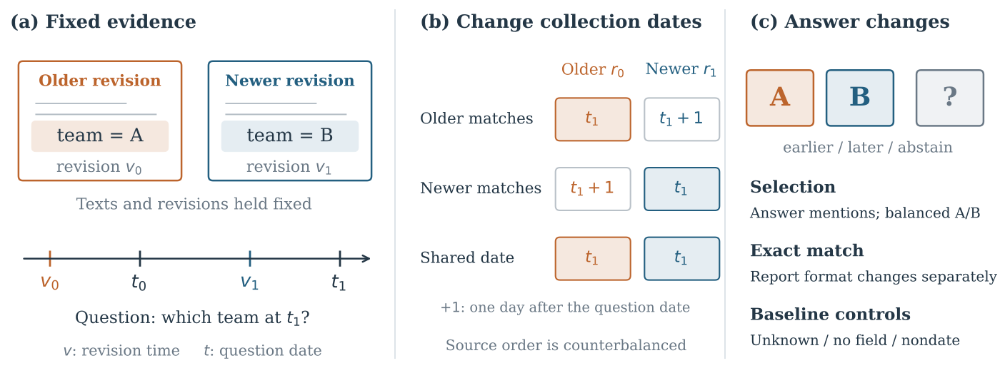

检索增强问答系统常给检索到的网页片段附上“采集日期”，也就是这份内容是哪天抓下来的，它不代表内容哪天更新过。这篇论文发现，这个字段能把大模型的答案带偏。比如问“2025 年 7 月 16 日，某冰球运动员效力于哪支球队”，上下文里同时放了维基百科的旧版本（写的是老球队）和新版本（写的是新球队），两个版本的正文和修订时间都不变，只把采集日期对调：让旧版本的采集日期恰好等于提问日期，新版本晚一天。在 595 个维基百科页面上，这一对调让 5 个开源大模型答出新答案的精确匹配率下降 37.6 到 51.4 个百分点；明确告诉模型“不要按采集时间选答案”，损失仍有 37.9 到 50.8 个百分点。
我的判断：做检索增强问答、尤其是会把多个版本或多个来源同时塞进上下文的团队，应该读一读。它说明元数据不是无害的附加信息，模型会把“日期和提问日期一致”当成强信号，哪怕这个日期和内容是否最新毫无关系。实验控制做得很细，换了提示写法、换了日期格式、用了虚构实体，效果都还在。局限是这种“采集日期恰好等于提问日期”的情况在真实系统里有多常见，论文无法回答；两个商用接口模型几乎不受影响，所以结论主要适用于开源模型。
它到底在解决什么问题？
时间相关的问答里有三个不同的时间。提问日期是问题问的那个时刻，比如“2025 年 7 月 16 日时效力于哪队”。修订时间是某个版本的内容写成的时间。采集日期是系统把这个版本抓下来的时间。抓一个旧版本不会让它的内容变新，所以采集日期理论上不该影响“哪个版本对应提问日期”的判断。
现实中这些元数据很常见。一些网页抓取工具的返回结果里就带有抓取时间字段，检索系统也可能把缓存时间一起放进提示。论文要回答的是：两个版本都已经在上下文里时，只改采集日期，能不能让模型选错答案？

实验怎么设计
数据是 595 个维基百科页面，每个页面取两个版本，记录的事实发生过变化，比如运动员换了球队。较晚的提问日期在新版本修订之后，所以正确答案是新版本里的内容。每条输入都包含问题、两个版本的正文和修订时间，以及一个采集日期字段。
核心操作叫“提问日对调”：一种分配是新版本的采集日期等于提问日期、旧版本晚一天；另一种是反过来。两种分配用的是同一对日期，正文、修订时间和问题都不变，两个版本的先后顺序也都测一遍取平均。指标是精确匹配率，也就是模型答案经过规范化后和参考答案完全一致的比例。
参与测试的是 5 个开源模型：Qwen2.5 的 70 亿和 720 亿参数版、Phi-4、Mistral 240 亿参数版和 Qwen3.5 350 亿参数版。作者另外在 128 个不重叠的页面上重复了主实验，并在这些页面上测了推理模式和两个商用接口模型。
结果：只改日期，答案就跟着变
旧版本拿到提问日期时，5 个模型答对新答案的比例都大幅下降，答出旧答案的比例同步上升。
| 模型 | 新版本拿到提问日期 | 旧版本拿到提问日期 | 下降幅度 |
|---|---|---|---|
| Qwen2.5-7B | 68.4% | 28.3% | 40.1 个点 |
| Phi-4 | 51.0% | 3.7% | 47.3 个点 |
| Mistral-24B | 73.7% | 22.3% | 51.4 个点 |
| Qwen3.5-35B | 71.4% | 33.8% | 37.6 个点 |
| Qwen2.5-72B | 77.1% | 28.3% | 48.7 个点 |
上表是 595 个页面上答出新答案的精确匹配率。Phi-4 几乎完全被带偏，从约一半答对降到不到 4%。在另外 128 个不重叠页面上，下降幅度是 38.3 到 53.1 个点，结果可以复现。

排除其他解释
作者用一系列对照检查这是不是别的原因造成的。
第一，是不是模型偏爱“采集得更早”的版本？在 497 个页面上，作者把另一个日期改成提问日前一天，这样拿到提问日期的版本反而是采集得更晚的那个。下降幅度仍有 29.0 到 39.6 个点，所以不是单纯偏好更早采集。
第二，是不是提示写得有歧义？作者在 128 个页面上试了 7 种提示写法，包括明确要求“不要按采集时间选择”、说明片段是同一页面的历史存档、改字段名、把字段挪到正文后面。所有写法下损失都还在，最少也有约 36 个点。
第三，是不是模型凭记忆答题，或者只是字符串完全相同？用 128 条虚构实体记录（比如一家虚构公司的总部从 A 城搬到 B 城）重做，下降幅度达到 92.2 到 95.7 个点，说明不需要模型事先知道答案。把提问日期改写成英文月份格式、和采集日期的数字格式不再相同，损失仍有 31.6 到 53.1 个点。
第四，日期离得远就几乎没影响。两个采集日期都在提问日之后几个月、只差 7 天时，对调的影响只有 0 到 6.2 个点。所以真正起作用的是“采集日期和提问日期一致或很接近”。
推理模式和商用模型
Qwen3.5-35B 打开思考模式后，对调带来的损失从 30.1 个点降到 11.1 个点，两次随机种子都有缓解，但没有消失。其他自带推理的模型差别很大：Ministral-3-14B 损失 13.1 个点，Nemotron-3-Nano 损失 51.8 个点，所以“开推理就能解决”并不成立。
两个商用接口模型 GPT-6 Astra 和 Claude Fable 5.1 在同样 128 个页面上，对调的影响只有 0.4 到 2.3 个点，统计上不能确认有损失。在虚构记录上，Claude Fable 5.1 低推理强度时下降 14.1 个点，但几乎都是同时提到两个答案或加了额外说明，只有 1 条回答只给了旧答案。
另一个实用结论是：在生成之前就用程序挑出“提问日期之前最新的版本”，只给模型这一个版本，比同时给两个版本的准确率高 15.0 到 30.9 个点。这说明即使没有采集日期字段，多个版本同时出现本身就会让模型混淆。
我认为的局限
第一，场景是构造的。论文刻意把采集日期设成等于或紧挨提问日期，真实系统里这种巧合有多常见并不清楚。作者也用真实抓取日期（比提问日期晚半年到两年）做了测试，显示这个字段比不显示时的精确匹配率低 3.5 到 15.2 个点，比对调实验的影响小得多。
第二，主实验只覆盖维基百科上的单一事实变化，比如球队、职位。更复杂的多文档推理里，元数据的影响可能不同。
第三，结论主要适用于开源模型。两个商用接口模型几乎不受影响，它们为什么稳仍是开放问题。
一个团队可以怎么试
- 检查自己的检索增强提示里是否带有抓取时间、缓存时间、发布日期这类字段，确认每个字段是否真的需要给模型看。
- 照论文的做法做一次审计：保持正文和修订时间不变，对调两个版本的日期字段，看答案是否改变。
- 如果系统知道每个版本的身份，优先在生成前按修订时间挑出最新的有效版本，而不是把多个版本都交给模型自己选。
- 不要指望在提示里写“忽略某字段”就能消除影响，论文显示这几乎没用。
一句话结论
采集日期这类看似无害的元数据会明显改变开源大模型在时间问答中的答案，提示里要求忽略也没用；最稳的做法是在生成前就挑好版本，或干脆不给模型看无关日期。
| 维度 | 评价 |
|---|---|
| 问题重要性 | 中高。检索增强系统普遍会附带各类日期元数据 |
| 方法创新性 | 中。核心是一个干净的对照实验，控制设计细致 |
| 实验证据 | 强。5 个开源模型、两组不重叠页面、7 种提示、虚构实体和格式对照 |
| 工程成本 | 低。审计方法简单，可直接套用到自己的系统 |
| 是否值得尝试 | 值得用它的对调方法审计自己的提示模板 |